Skills: Service Design, User Research, Storyboarding, UX Design
Time Span: October - December 2018
Overview
AEO TrueFit Studio is a service innovation designed for our client American Eagle Outfitters, a popular brand among young adults, to increase traffic to physical stores by offering customers an all-inclusive in-store personalized experience. This brand new service allows customers of all sizes to have find their perfect fit of jeans in-store through a comfortable and private fitting space.
Phase 1: Discover
American Eagle Outfitters is a popular clothing brand favored by college-aged young adults. However, it suffers from perceptions as a “middle school” clothing retailer in the eyes of 20-25 year olds. The company is currently seeking to attract a more diverse customer base and promote customer loyality. To gain deeper insights into the problem context and thus better serve our client, we took the following steps in our research structure:
- Initial information from our talk with the brand representatives to understand their needs and wants for this innovation.
- Broad secondary research into four areas (in-store personalization, omni-channel fulfillment, return and exchanges, associate enactment) to determine which innovative direction we want to dive in futher on.
- Understand customer's current state from primacy research, including survey with targeted customers and in-store contextual inquiry.
- Conduct additional secondary research to gain an overview of current practices of AEO's competitors on the market.
Secondary Research: Indentify Problem Space and Narrow Research Scope
To better understand what opportunities could we bring to the current AEO service, we conducted secondary research on 4 areas of improvement mentioned by our client. Our research indicated that personalization in brick and mortar stores can increase revenue, customer loyalty, and marketing efficiency. services. Brands that have successfully implemented in-store personalization strategies include Target. Nordstrom and Sephora, who are renowned for having associates that are deemed “stylists” to make themselves readily available to help their customers. Customers at stores like Nordstrom know that they can walk into either store and find products/clothing that best fits their own body. This brings tremendous benefits to boost brand loyality. We also learned that personalization goes beyond sales associates and phone apps.
Because our ultimate goal is to attract more customers and strengthen brand loyality, we decided to choose in-store personalization as a research domain, with a particular focus in how associates interact with customers to create a memorable and personal experience.
Survey: Understand Targeted Customer Demographic
We launched our survey via Google Surveys and received 78 responses from our key target market on their shopping experience, buying habits, and brand perception of AEO. We found that these customers predominantly shop online for high accessibility and more convenience. They also noted that shopping in-person may be intimidating, especially if they have sizing problems or are unsure of what to purchase. Respondents loved Aerie’s body positivity campaign, but most of them perceive AEO as a "teen retailer" and lose connection between AE and AEO.
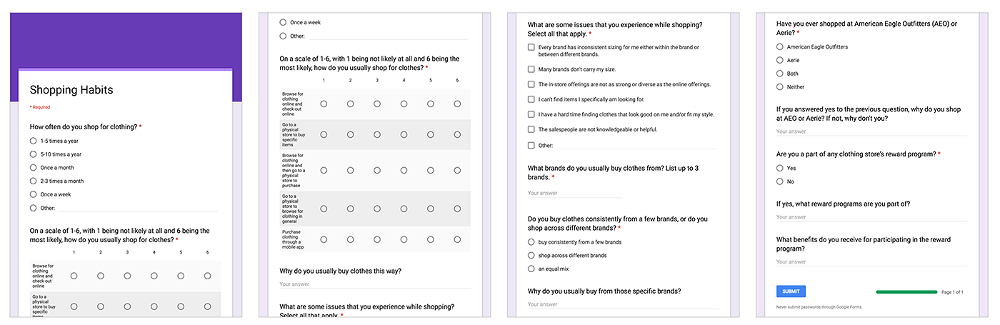
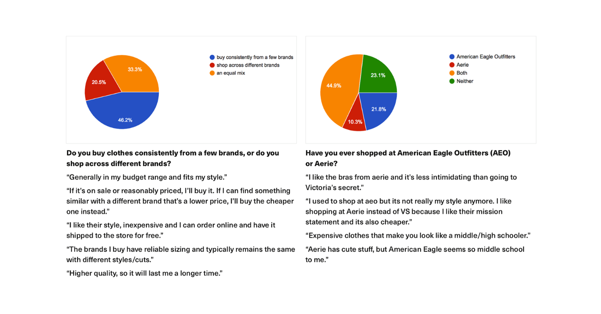
Contextual Inquiry: Deep Dive into Customer Journey
When we visited the American Eagle store, we decided to focus our observations on the various touchpoints in interactions between the in-store associates and shopper. We saw that features on the the AEO application add little value to the in-store shopping experience: many customers aren't even aware of the app. There is also a mismatch between the role in-store associates and the expectations set by customers. Many customers find associates to be intimidating and are unwilling to seek help when they encounter sizing issues.
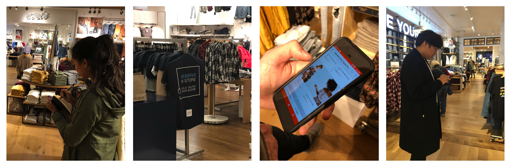
Competitive Analysis: Evaluate AEO's Advantages and Shortcomings
Furthermore, we conduct competitive analysis on the servicescape of relevant retailers such as Sephora, Abercrombie & Fitch, Lululemon, etc. Among their closest competitors in the clothing retail space, we found that American Eagle fails to adequately personalize the shopping experience for all customers. Some customers feel marginizalied in the received service due to sizing issues, lack of privacy, unpleasant associate interaction, etc. Future innovations should focus on enhancing American Eagle’s accepting and associate engagement driven shopping experience while rehabilitating their image to increase traffic among 20-25 year olds.
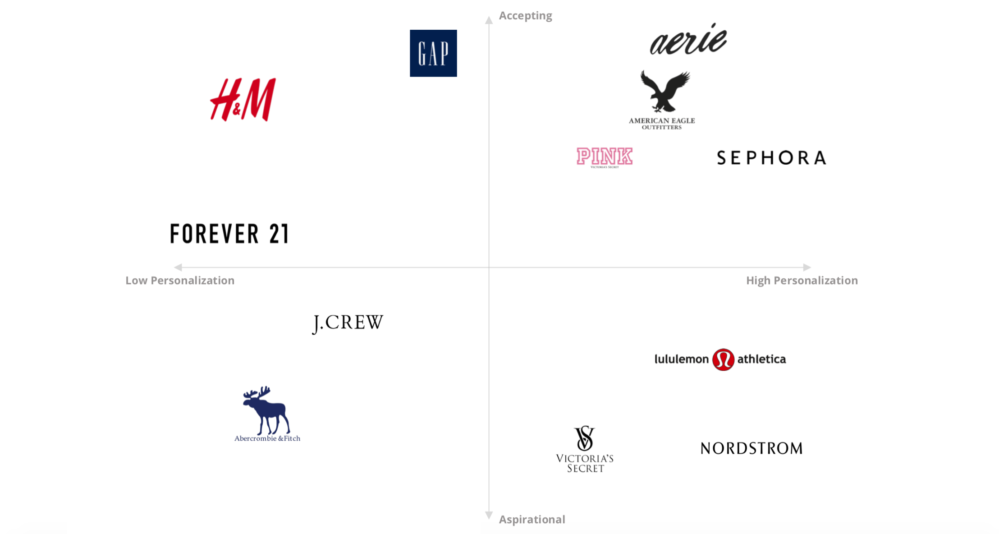
Phase 2: Synthesize
Based on our research findings, we create artifacts to model the current service experience. This includes personas, current customer journey maps, service blueprint which describes the current state visible and backstage interaction. By evaluating the current service state, we hope to find opportunities for innovation to bring new value to the service.
We first developed three key customer types from our findings that fit the model of potential customers that American Eagle could better target, with journey maps prototyping their experiences in-store:
- The Social Shopper: Social media heavily influences their buying habits as they are avid users on platforms like instagram and facebook. They struggle to purchase clothing from other brands due to inconsistency of sizing across brands.
- The Exploratory Shopper: A shopper who likes to browse but feels intimidated to shop because they don’t know what they want or what fits them.
- The Focused Shopper: A shopper who knows exactly what they want and what brand to purchase from. They want their shopping experience to be time-efficient and independent.
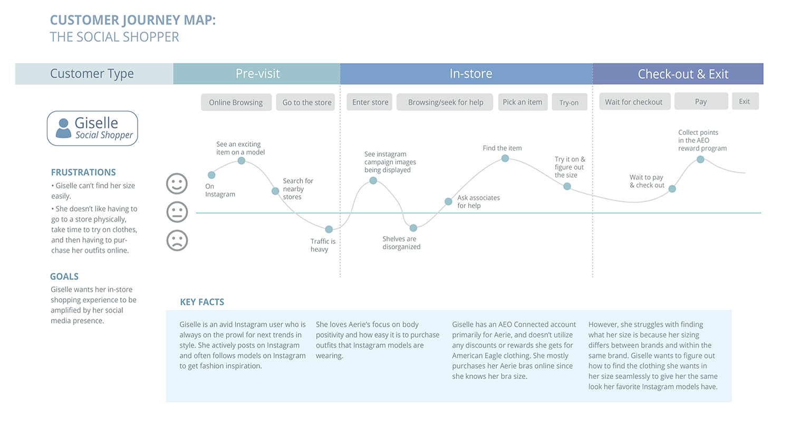
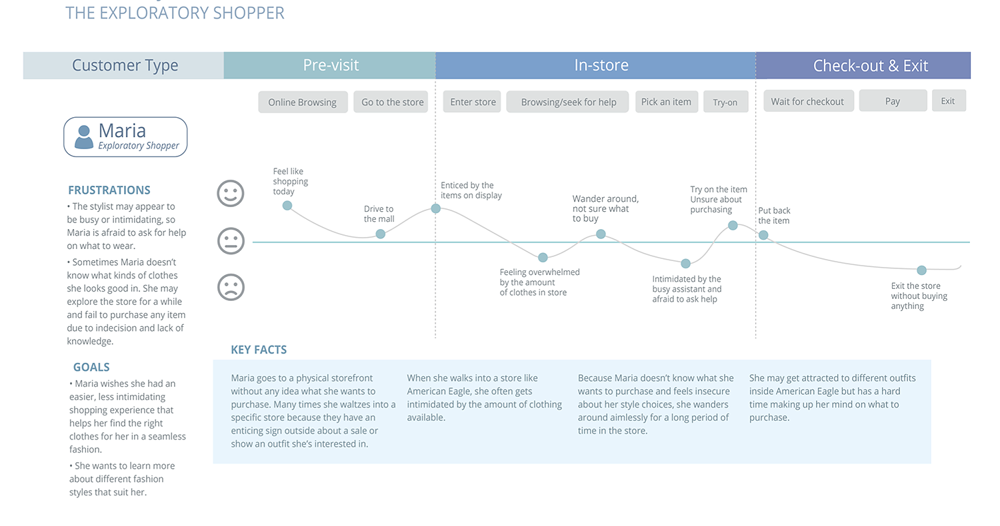

Our service blueprint uniquely focuses on the processes that occur in an American Eagle store located in a mall:
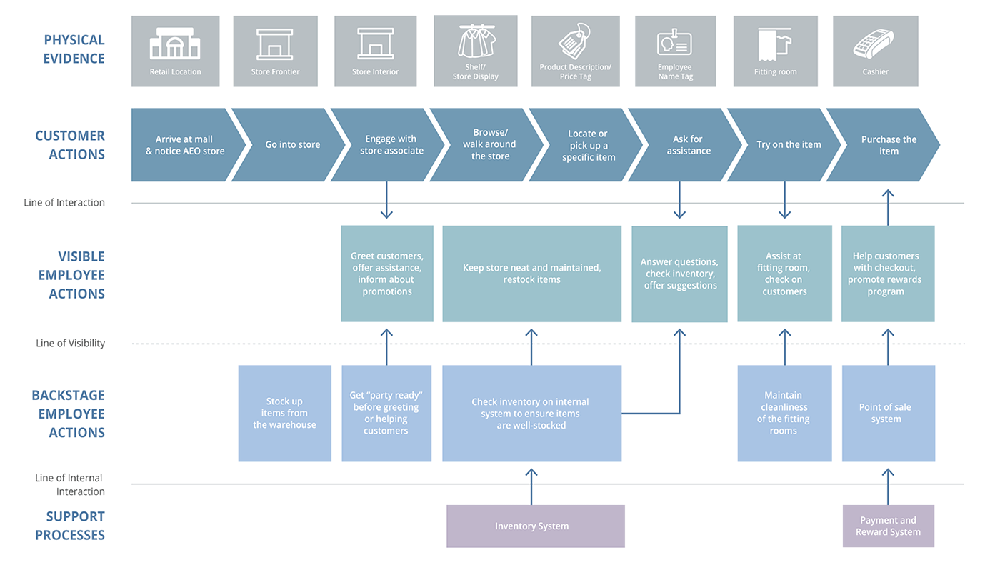
Phase 3: Innovate and Refine
After several rounds of ideation, we decided to tackle the in-store sizing problem of jeans. We learned through our research that American Eagle carries many “online-only” sizes, which means that customers in need of these sizes are unable to try these jeans on before purchasing them. Consequently, they are left ordering several sizes of jeans, hoping one fits, and returning the other jeans. Moreover, customers are reluctant to share their sizing information with associates. We decided that this is a critical problem space that our service innovation should tackle.
Currently, American Eagle serves its customers through two main channels: traditional retail stores and e-commerce. While we see a gradual trend of increasing sales in e-commerce, we also observe some pain points in customer’s online shopping experience when we conducted background research and contextual inquiry. In particular, many customers find the online return process to be both tedious and time-consuming.
The in-store experience suffers from issues that fail to provide a comfortable and satisfying shopping experience for customers. Similar to many other retailers, American Eagle physical stores currently only carry the medium range of sizes due to inventory issues. This inadvertently alienates many customers on the tail-ends of the size spectrum, as they are unable to find jeans in store to try on and purchase. This is a large customer segment that would easily develop brand loyalty towards American Eagle specifically for jeans.
Storyboards: Idea Generation
We then identified key touch points within this journey and brainstormed possible variations that transformed each touchpoint. We ended up narrowing our ideas down to 7 main variations that we felt most concisely reflected the different directions we could take. Each idea had a different variation on how the users would enter the experience and then checkout. Below is the framework of the journey we created.
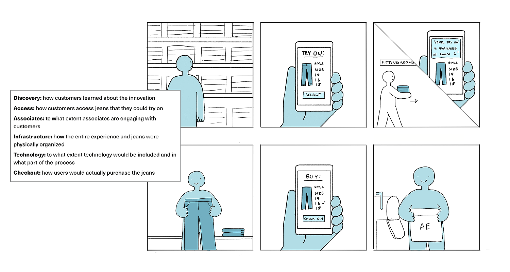
Speed Dating: Minimize Potential Risks
We used Speed Dating as an opportunity to prototype against what we anticipated would be the most significant risks of the service innovation, including:
1. How do customers feel about the concept of “try-on-only” jeans?
2. Would customers be comfortable with the idea of a “self-service” checkout
experience in the fitting room? Is this a preferable alternative to checking out with
a sales associate?
3. Would customers prefer to encounter all available jeans in the fitting room itself? Or select from the jeans in a shared space just outside the fitting rooms?
4. Would customers prefer to perform the self-checkout process on a mounted display in the fitting room, or on their mobile device?
5. How do customers feel about ordering in-store and having jeans fulfilled to their
home via shipping? Does this compromise the value of the service innovation?
Our team conducted Speed Dating with approximately 15 participants who are representative of our target audience. In general, we found the Speed Dating process to be a very efficient and revealing method for generating insights into the desirability of our proposed solution. Initially, we elected to pursue a model wherein customers would request jeans to the fitting room via a mobile web form, in order to avoid concerns about stocking each fitting room. However, with additional critique and feedback, our team arrived at a self-service model that minimized the demand on associates, with fitting rooms featuring all available jeans sizes and a mounted tablet for checkout.
Phase 4: Design and Prototype
Service Sketches: Final Idea
We finally arrive at the idea of TrueFit Studio: a service in which a user would walk into a fitting room that has all possible sizes of several styles jeans stacked for a user to try on. There would be minimal to no associate interaction involved in this process. Once the user finds a pair of jeans they like, they can proceed to checkout within the studio itself. They can use the mounted display to log into AEO Connected, choose what color jeans they want, and have the jeans delivered home.
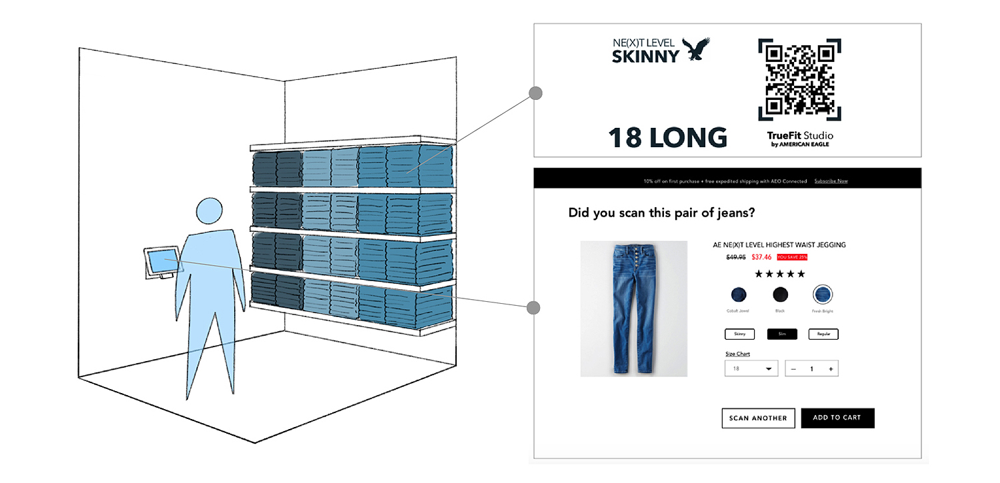
We believe our service innovation would help increase sales and the number of loyal customers to American Eagle. The AEO TrueFit Studio brings new value to the product-service system by:

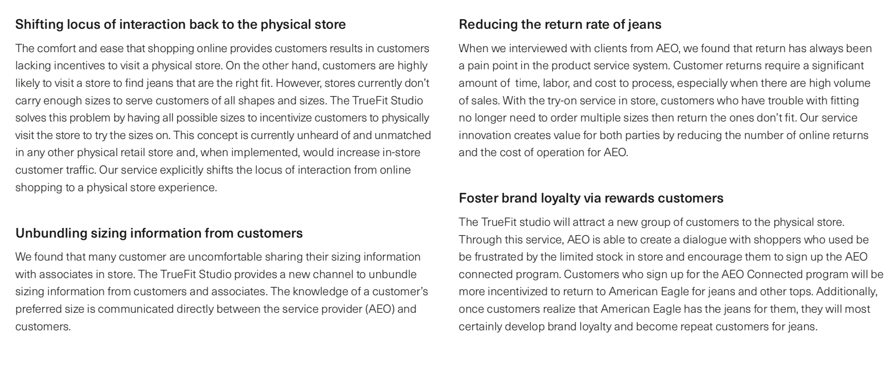
Service Enactment: Further Testing
we ran a service enactment with 8 participants in our target demographic of 20-25 year olds. Each participant was given a series of user tasks to complete as they experienced the TrueFit Studio like at an actual AEO store. Our research goals for the service enactments were to:
1. understand if users understand how to use our service
2. learn whether they get a sense of inclusivity and brand loyalty from using our service
3. observe how they interact with the mounted display when checking out the items.
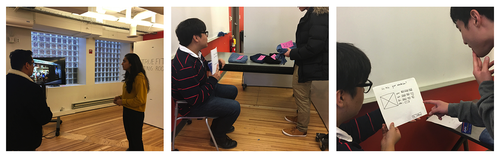
Many participants liked that they didn’t have to leave the physical studio to grab multiple pairs of jeans to try. We learned that shoppers value their time and physically looking for and trying multiple pairs of jeans can be a burdensome process. Our studio mitigates this issue by providing all possible jean sizes in one location for the customer to readily access.
One main problem we found with our UI mockup of the mounted display was that it didn’t clearly indicate that the sizes are not available in store for purchase. Many participants pressed on the option to check out with an associate thinking that they would be able to get the jeans directly from the associate.
Refined Artifacts
Based on the reframing of the problematic situation, we re-generate artifacts such as personas, journey maps and blueprints of the future, and service scenarios.
Compared to previous service blueprints, our final service blueprint focuses on the backstage and visible interactions solely related to the TrueFit studio. The service innovation greatly reduces the employee actions onstage, because sale associates are no longer a crucial part of the fitting experience. This change has two benefits.
- First, it reduces the workload for associates because customers can now find and try on different sizes on their own. Associates can use this time to help customers with styling instead of sizing.
- Secondly, customers who are uncomfortable with sharing their sizing information with associates can bypass that step and have a more comfortable in-store experience.
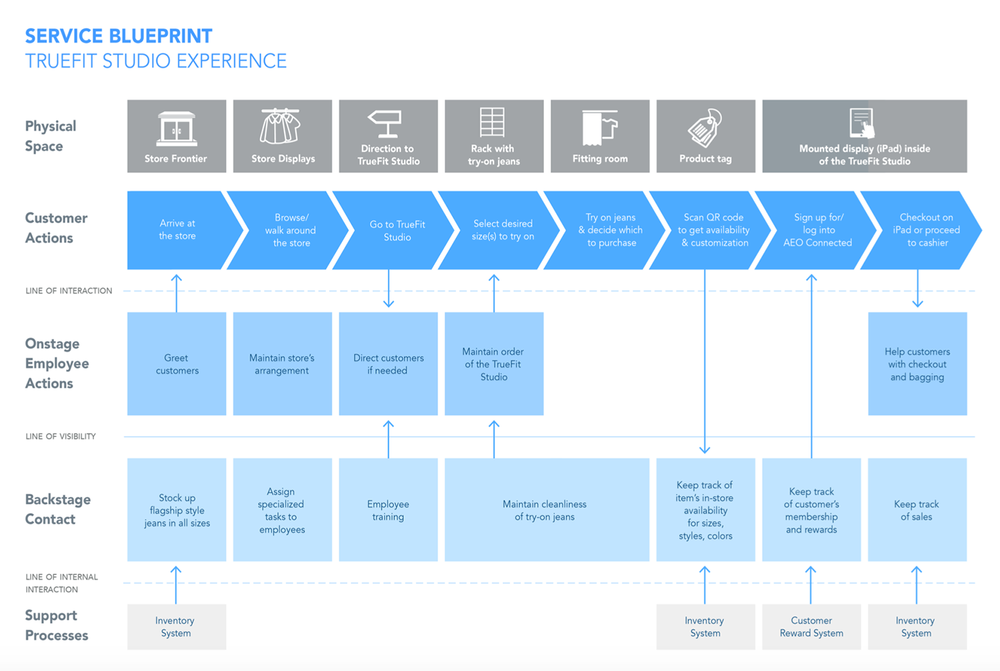
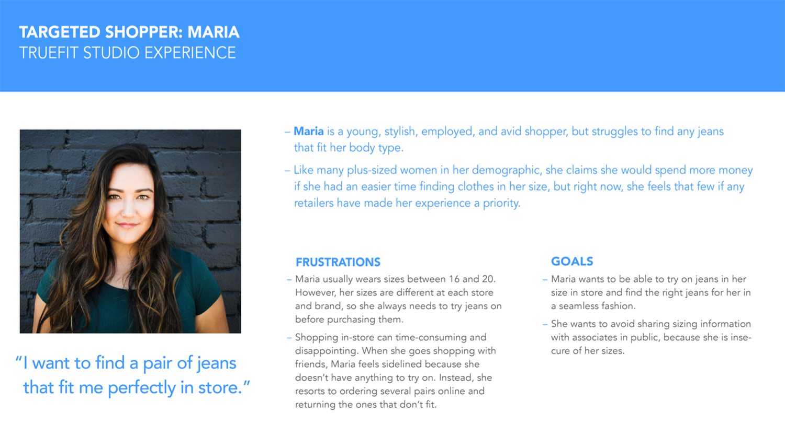
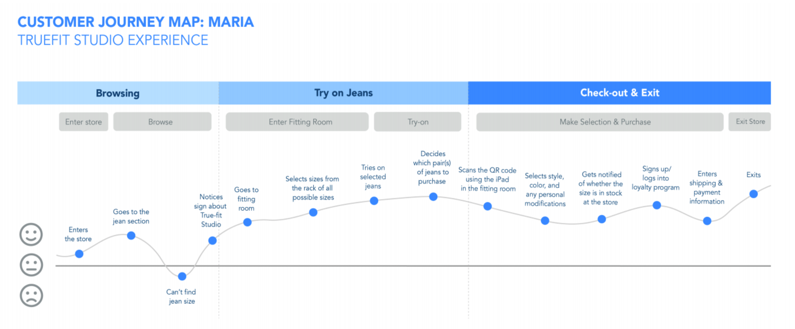